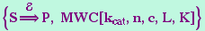
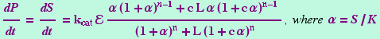
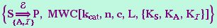
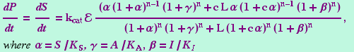
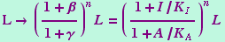

| MWC (Monod-Wyman-Changeux Arrows) | Reference Home |
MWC[kcat,n,c,L,K] is an uninstantiated function that encapsulates the parameters used in the Monod-Wyman-Changeux Model. There are two canonical forms. The first is

which is interpreted as

and the other canonical form is

which is interpreted as

The second form is equivalent to the first firm with

See also: GMWC
Implementation Note: The functions MWC and GMWC can be use interchangeabley, however, it is recommended for notebook clarity that MWC be used when the traditional model is used and GMWC be used when the generalized model is used.
Reference: Monod J, Wyman J, Changeux JP (1965) On the nature of allosteric transitions: A plausible model. Journal of Molecular Biology, 12:88.